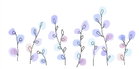
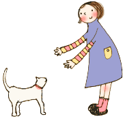

** Topic 2009年 ５月**

●健康な歯

５月になり、日によっては外で動いていると汗ばむ日もありますね。
ペットを連れてのお散歩には最適の季節です。お出かけしなくても、おうちのお気に入りのところで一緒に日向ぼっこ！いいですね！！
狂犬病の予防注射、すみましたか？
今年は、例年より気温の上昇が早いようです。フィラリアの予防、ノミダニの予防も、５月から始められることをお勧めしております。遅れずに始めましょう。
さて、昨今のペットたち、飼育環境の改善、獣医療の進歩などによりとっても長生きができるようになりました。
いつまでも、健康なお口でおいしくご飯が食べれること。人と同じようにペットでもそうありたいですよね。
健康なお口は、歯と歯を支える組織（歯周組織；歯周靭帯、歯槽骨、歯肉）が健康でなければなりません。そのための、防御機構があります。
1, 唾液・・・唾液には過酸化水素を基盤とした抗菌作用があります。また、物理的に歯垢の付着を防ぎます。
2,
歯肉溝（歯周ポケット）・・通常は1～3ｍｍの深さです。分泌性の歯肉溝上皮より浸出液が作られます。これには、免疫グロブリンや抗菌物質が多く含まれており、歯肉や歯を支える歯周靭帯を口腔内細菌の感染から守ります。
3, そのほか、歯や歯周組織の構造にも歯垢が付きにくいような構造があります。
『よく噛むこと』は、これらの防御機構を十分に働かせることなのです。
野生の動物に歯の病気が少ないのは、本来の特性を生かして、よく噛んでいるからでしょう。
ペットたちが、一般的に食べているフードでは、『噛む』ことが不十分なんです。だから、お口のケアーが必要なのです。
まずは、ブラッシング！
動物用の歯ブラシは意外と高価ですよね。買って、やったけど噛んでしまってすぐにぐちゃぐちゃ。なんてことも。慣れるまでは、人用で口の大きさにあわせて、小児用歯ブラシなどで代用するのもおすすめです。
基本的には歯磨きペーストは必要ないかと思うのですが、ペーストやデンタルジェルのなかには歯垢の付着を防ぐ酵素が含まれているものもあります。
歯の生え換わりや、なかなか歯磨きをさせてくれないときには、効果的です。
歯周病の初期であれば、ブラッシングとデンタルジェルにより、炎症を抑えることができ、進行を止めることができます。
病院で使っているいくつかをご紹介します。
歯磨きにはコツがあります。ひと通りではありません、たくさんのやりやすい方法がありと思います。でも、うまくいかないとき、ぜひご相談ください。
注：参考文献「小動物臨床歯科ハンドブック」チクサン出版
歯ブラシは、小児用ですが、ネコ、小型から中型犬、子犬まで比較的適応範囲があります。